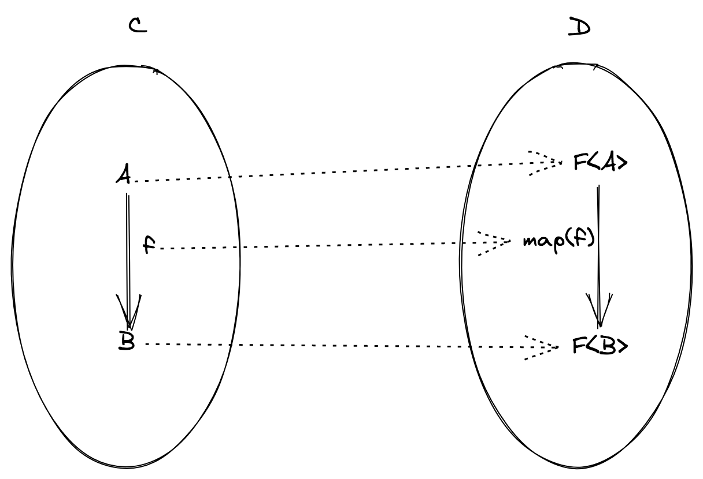

Functors
In the last section we've spoken about the TS category (the TypeScript category) and about function composition's core problem:
How can we compose two generic functions
f: (a: A) => Bandg: (c: C) => D?
Why is finding solutions to this problem so important?
Because, if it is true that categories can be used to model programming languages, morphisms (functions in the TS category) can be used to model programs.
Thus, solving this abstract problem means finding a concrete way of composing programs in a generic way. And that is really interesting for us developers, isn't it?
Functions as programs
If we want to model programs with functions we need to tackle an issue immediately:
How is it possible to model a program that produces side effects with a pure function?
The answer is to model side effects through effects, meaning types that represent side effects.
Let's see two possible techniques to do so in JavaScript:
- define a DSL (domain specific language) for effects
- use a thunk
The first technique, using a DSL, means modifying a program like:
function log(message: string): void {
console.log(message) // side effect
}
changing its codomain to make the function return a description of the side effect:
type DSL = ... // sum type of every possible effect handled by the system
function log(message: string): DSL {
return {
type: "log",
message
}
}
Quiz. Is the freshly defined log function really pure? Actually log('foo') !== log('foo')!
This technique requires a way to combine effects and the definition of an interpreter able to execute the side effects when launching the final program.
The second technique, way simpler in TypeScript, is to enclose the computation in a thunk:
// a thunk representing a synchronous side effect
type IO<A> = () => A
const log = (message: string): IO<void> => {
return () => console.log(message) // returns a thunk
}
The log program, once executed, won't cause immediately a side effect, but returns a value representing the computation (also known as action).
import { IO } from 'fp-ts/IO'
export const log = (message: string): IO<void> => {
return () => console.log(message) // returns a thunk
}
export const main = log('hello!')
// there's nothing in the output at this point
// because `main` is only an inert value
// representing the computation
main()
// only when launching the program I will see the result
In functional programming there's a tendency to shove side effects (under the form of effects) to the border of the system (the main function) where they are executed by an interpreter obtaining the following schema:
system = pure core + imperative shell
In purely functional languages (like Haskell, PureScript or Elm) this division is strict and clear and imposed by the very languages.
Even with this thunk technique (the same technique used in fp-ts) we need a way to combine effects, which brings us back to our goal of composing programs in a generic way, let's see how.
We first need a bit of (informal) terminology: we'll call pure program a function with the following signature:
(a: A) => B
Such a signature models a program that takes an input of type A and returns a result of type B without any effect.
Example
The len program:
const len = (s: string): number => s.length
We'll call an effectful program a function with the following signature:
(a: A) => F<B>
Such a signature models a program that takes an input of type A and returns a result of type B together with an effect F, where F is some sort of type constructor.
Let's recall that a type constructor is an n-ary type operator that takes as argument one or more types and returns another type. We have seen examples of such constructors as Option, ReadonlyArray, Either.
Example
The head program:
import { Option, some, none } from 'fp-ts/Option'
const head = <A>(as: ReadonlyArray<A>): Option<A> =>
as.length === 0 ? none : some(as[0])
is a program with an Option effect.
When we talk about effects we are interested in n-ary type constructors where n >= 1, example given:
| Type constructor | Effect (interpretation) |
|---|---|
ReadonlyArray<A> | a non deterministic computation |
Option<A> | a computation that may fail |
Either<E, A> | a computation that may fail |
IO<A> | a synchronous computation that never fails |
Task<A> | an asynchronous computation never fails |
Reader<R, A> | reading from an environment |
where
// a thunk returning a `Promise`
type Task<A> = () => Promise<A>
// `R` represents an "environment" needed for the computation
// (we can "read" from it) and `A` is the result
type Reader<R, A> = (r: R) => A
Let's get back to our core problem:
How do we compose two generic functions
f: (a: A) => Beg: (c: C) => D?
With our current set of rules this general problem is not solvable. We need to add some boundaries to B and C.
We already know that if B = C then the solution is the usual function composition.
function flow<A, B, C>(f: (a: A) => B, g: (b: B) => C): (a: A) => C {
return (a) => g(f(a))
}
But what about other cases?
A boundary that leads to functors
Let's consider the following boundary: B = F<C> for some type constructor F, we have the following situation:
f: (a: A) => F<B>is an effectful programg: (b: B) => Cis a pure program
In order to compose f with g we need to find a procedure that allows us to derive a function g from a function (b: B) => C to a function (fb: F<B>) => F<C> in order to use the usual function composition (this way the codomain of f would be the same of the new function's domain).

We have mutated the original problem in a new one: can we find a function, let's call it map, that operates this way?
Let's see some practical example:
Example (F = ReadonlyArray)
import { flow, pipe } from 'fp-ts/function'
// transforms functions `B -> C` to functions `ReadonlyArray<B> -> ReadonlyArray<C>`
const map = <B, C>(g: (b: B) => C) => (
fb: ReadonlyArray<B>
): ReadonlyArray<C> => fb.map(g)
// -------------------
// usage example
// -------------------
interface User {
readonly id: number
readonly name: string
readonly followers: ReadonlyArray<User>
}
const getFollowers = (user: User): ReadonlyArray<User> => user.followers
const getName = (user: User): string => user.name
// getFollowersNames: User -> ReadonlyArray<string>
const getFollowersNames = flow(getFollowers, map(getName))
// let's use `pipe` instead of `flow`...
export const getFollowersNames2 = (user: User) =>
pipe(user, getFollowers, map(getName))
const user: User = {
id: 1,
name: 'Ruth R. Gonzalez',
followers: [
{ id: 2, name: 'Terry R. Emerson', followers: [] },
{ id: 3, name: 'Marsha J. Joslyn', followers: [] }
]
}
console.log(getFollowersNames(user)) // => [ 'Terry R. Emerson', 'Marsha J. Joslyn' ]
Example (F = Option)
import { flow } from 'fp-ts/function'
import { none, Option, match, some } from 'fp-ts/Option'
// transforms functions `B -> C` to functions `Option<B> -> Option<C>`
const map = <B, C>(g: (b: B) => C): ((fb: Option<B>) => Option<C>) =>
match(
() => none,
(b) => {
const c = g(b)
return some(c)
}
)
// -------------------
// usage example
// -------------------
import * as RA from 'fp-ts/ReadonlyArray'
const head: (input: ReadonlyArray<number>) => Option<number> = RA.head
const double = (n: number): number => n * 2
// getDoubleHead: ReadonlyArray<number> -> Option<number>
const getDoubleHead = flow(head, map(double))
console.log(getDoubleHead([1, 2, 3])) // => some(2)
console.log(getDoubleHead([])) // => none
Example (F = IO)
import { flow } from 'fp-ts/function'
import { IO } from 'fp-ts/IO'
// transforms functions `B -> C` to functions `IO<B> -> IO<C>`
const map = <B, C>(g: (b: B) => C) => (fb: IO<B>): IO<C> => () => {
const b = fb()
return g(b)
}
// -------------------
// usage example
// -------------------
interface User {
readonly id: number
readonly name: string
}
// a dummy in-memory database
const database: Record<number, User> = {
1: { id: 1, name: 'Ruth R. Gonzalez' },
2: { id: 2, name: 'Terry R. Emerson' },
3: { id: 3, name: 'Marsha J. Joslyn' }
}
const getUser = (id: number): IO<User> => () => database[id]
const getName = (user: User): string => user.name
// getUserName: number -> IO<string>
const getUserName = flow(getUser, map(getName))
console.log(getUserName(1)()) // => Ruth R. Gonzalez
Example (F = Task)
import { flow } from 'fp-ts/function'
import { Task } from 'fp-ts/Task'
// transforms functions `B -> C` into functions `Task<B> -> Task<C>`
const map = <B, C>(g: (b: B) => C) => (fb: Task<B>): Task<C> => () => {
const promise = fb()
return promise.then(g)
}
// -------------------
// usage example
// -------------------
interface User {
readonly id: number
readonly name: string
}
// a dummy remote database
const database: Record<number, User> = {
1: { id: 1, name: 'Ruth R. Gonzalez' },
2: { id: 2, name: 'Terry R. Emerson' },
3: { id: 3, name: 'Marsha J. Joslyn' }
}
const getUser = (id: number): Task<User> => () => Promise.resolve(database[id])
const getName = (user: User): string => user.name
// getUserName: number -> Task<string>
const getUserName = flow(getUser, map(getName))
getUserName(1)().then(console.log) // => Ruth R. Gonzalez
Example (F = Reader)
import { flow } from 'fp-ts/function'
import { Reader } from 'fp-ts/Reader'
// transforms functions `B -> C` into functions `Reader<R, B> -> Reader<R, C>`
const map = <B, C>(g: (b: B) => C) => <R>(fb: Reader<R, B>): Reader<R, C> => (
r
) => {
const b = fb(r)
return g(b)
}
// -------------------
// usage example
// -------------------
interface User {
readonly id: number
readonly name: string
}
interface Env {
// a dummy in-memory database
readonly database: Record<string, User>
}
const getUser = (id: number): Reader<Env, User> => (env) => env.database[id]
const getName = (user: User): string => user.name
// getUserName: number -> Reader<Env, string>
const getUserName = flow(getUser, map(getName))
console.log(
getUserName(1)({
database: {
1: { id: 1, name: 'Ruth R. Gonzalez' },
2: { id: 2, name: 'Terry R. Emerson' },
3: { id: 3, name: 'Marsha J. Joslyn' }
}
})
) // => Ruth R. Gonzalez
More generally, when a type constructor F admits a map function, we say it admits a functor instance.
From a mathematical point of view, functors are maps between categories that preserve the structure of the category, meaning they preserve the identity morphisms and the composition operation.
Since categories are pairs of objects and morphisms, a functor too is a pair of two things:
- a map between objects that binds every object
Xin C to an object in D. - a map between morphisms that binds every morphism
fin C to a morphismmap(f)in D.
where C e D are two categories (aka two programming languages).
Even though a map between two different programming languages is a fascinating idea, we're more interested in a map where C and D are the same (the TS category). In that case we're talking about endofunctors (from the greek "endo" meaning "inside", "internal").
From now on, unless specified differently, when we write "functor" we mean an endofunctor in the TS category.
Now we know the practical side of functors, let's see the formal definition.
Definition
A functor is a pair (F, map) where:
Fis ann-ary (n >= 1) type constructor mapping every typeXin a typeF<X>(map between objects)mapis a function with the following signature:
map: <A, B>(f: (a: A) => B) => ((fa: F<A>) => F<B>)
that maps every function f: (a: A) => B in a function map(f): (fa: F<A>) => F<B> (map between morphism)
The following properties have to hold true:
map(1X)=1F(X) (identities go to identities)map(g ∘ f) = map(g) ∘ map(f)(the image of a composition is the composition of its images)
The second law allows to refactor and optimize the following computation:
import { flow, increment, pipe } from 'fp-ts/function'
import { map } from 'fp-ts/ReadonlyArray'
const double = (n: number): number => n * 2
// iterates array twice
console.log(pipe([1, 2, 3], map(double), map(increment))) // => [ 3, 5, 7 ]
// single iteration
console.log(pipe([1, 2, 3], map(flow(double, increment)))) // => [ 3, 5, 7 ]
Functors and functional error handling
Functors have a positive impact on functional error handling, let's see a practical example:
declare const doSomethingWithIndex: (index: number) => string
export const program = (ns: ReadonlyArray<number>): string => {
// -1 indicates that no element has been found
const i = ns.findIndex((n) => n > 0)
if (i !== -1) {
return doSomethingWithIndex(i)
}
throw new Error('cannot find a positive number')
}
Using the native findIndex API we are forced to use an if branch to test whether we have a result different than -1. If we forget to do so, the value -1 could be unintentionally passed as input to doSomethingWithIndex.
Let's see how easier it is to obtain the same behavior using Option and its functor instance:
import { pipe } from 'fp-ts/function'
import { map, Option } from 'fp-ts/Option'
import { findIndex } from 'fp-ts/ReadonlyArray'
declare const doSomethingWithIndex: (index: number) => string
export const program = (ns: ReadonlyArray<number>): Option<string> =>
pipe(
ns,
findIndex((n) => n > 0),
map(doSomethingWithIndex)
)
Practically, using Option, we're always in front of the happy path, error handing happens behind the scenes thanks to map.
Demo (optional)
Quiz. Task<A> represents an asynchronous call that always succeed, how can we model a computation that can fail instead?
Functors compose
Functors compose, meaning that given two functors F and G then the composition F<G<A>> is still a functor and the map of this composition is the composition of the maps.
Example (F = Task, G = Option)
import { flow } from 'fp-ts/function'
import * as O from 'fp-ts/Option'
import * as T from 'fp-ts/Task'
type TaskOption<A> = T.Task<O.Option<A>>
export const map: <A, B>(
f: (a: A) => B
) => (fa: TaskOption<A>) => TaskOption<B> = flow(O.map, T.map)
// -------------------
// usage example
// -------------------
interface User {
readonly id: number
readonly name: string
}
// a dummy remote database
const database: Record<number, User> = {
1: { id: 1, name: 'Ruth R. Gonzalez' },
2: { id: 2, name: 'Terry R. Emerson' },
3: { id: 3, name: 'Marsha J. Joslyn' }
}
const getUser = (id: number): TaskOption<User> => () =>
Promise.resolve(O.fromNullable(database[id]))
const getName = (user: User): string => user.name
// getUserName: number -> TaskOption<string>
const getUserName = flow(getUser, map(getName))
getUserName(1)().then(console.log) // => some('Ruth R. Gonzalez')
getUserName(4)().then(console.log) // => none
Contravariant Functors
In the previous section we haven't been completely thorough with our definitions. What we have seen in the previous section and called "functors" should be more properly called covariant functors.
In this section we'll see another variant of the functor concept, contravariant functors.
The definition of a contravariant functor is pretty much the same of the covariant one, except for the signature of its fundamental operation, which is called contramap rather than map.

Example
import { map } from 'fp-ts/Option'
import { contramap } from 'fp-ts/Eq'
type User = {
readonly id: number
readonly name: string
}
const getId = (_: User): number => _.id
// the way `map` operates...
// const getIdOption: (fa: Option<User>) => Option<number>
const getIdOption = map(getId)
// the way `contramap` operates...
// const getIdEq: (fa: Eq<number>) => Eq<User>
const getIdEq = contramap(getId)
import * as N from 'fp-ts/number'
const EqID = getIdEq(N.Eq)
/*
In the `Eq` chapter we saw:
const EqID: Eq<User> = pipe(
N.Eq,
contramap((_: User) => _.id)
)
*/
Functors in fp-ts
How do we define a functor instance in fp-ts? Let's see some example.
The following interface represents the model of some result we get by calling some HTTP API:
interface Response<A> {
url: string
status: number
headers: Record<string, string>
body: A
}
Please note that since body is parametric, this makes Response a good candidate to find a functor instance given that Response is a an n-ary type constructor with n >= 1 (a necessary condition).
To define a functor instance for Response we need to define a map function along some technical details required by fp-ts.
// `Response.ts` module
import { pipe } from 'fp-ts/function'
import { Functor1 } from 'fp-ts/Functor'
declare module 'fp-ts/HKT' {
interface URItoKind<A> {
readonly Response: Response<A>
}
}
export interface Response<A> {
readonly url: string
readonly status: number
readonly headers: Record<string, string>
readonly body: A
}
export const map = <A, B>(f: (a: A) => B) => (
fa: Response<A>
): Response<B> => ({
...fa,
body: f(fa.body)
})
// functor instance for `Response<A>`
export const Functor: Functor1<'Response'> = {
URI: 'Response',
map: (fa, f) => pipe(fa, map(f))
}
Do functors solve the general problem?
Not yet. Functors allow us to compose an effectful program f with a pure program g, but g has to be a unary function, accepting one single argument. What happens if g takes two or more arguments?
| Program f | Program g | Composition |
|---|---|---|
| pure | pure | g ∘ f |
| effectful | pure (unary) | map(g) ∘ f |
| effectful | pure (n-ary, n > 1) | ? |
To manage this circumstance we need something more, in the next chapter we'll see another important abstraction in functional programming: applicative functors.